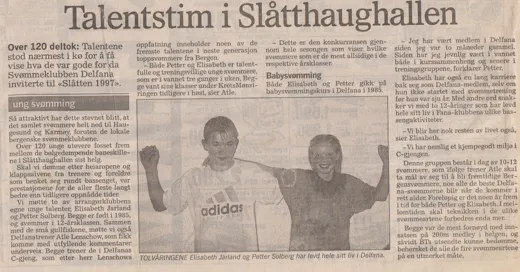

Presseutklipp · S05-1
To tolvåringer i Slåtthaughallen
1997 · Delfana
Elisabeth og Petter Solberg løfter armene sammen. Et åpningsbilde om klubbfellesskapet. Artikkelen omtaler både talent og treningsvilje.
Idrettskarriere – Elisabeth Jarland, lysbilde 5
Vis stort bilde